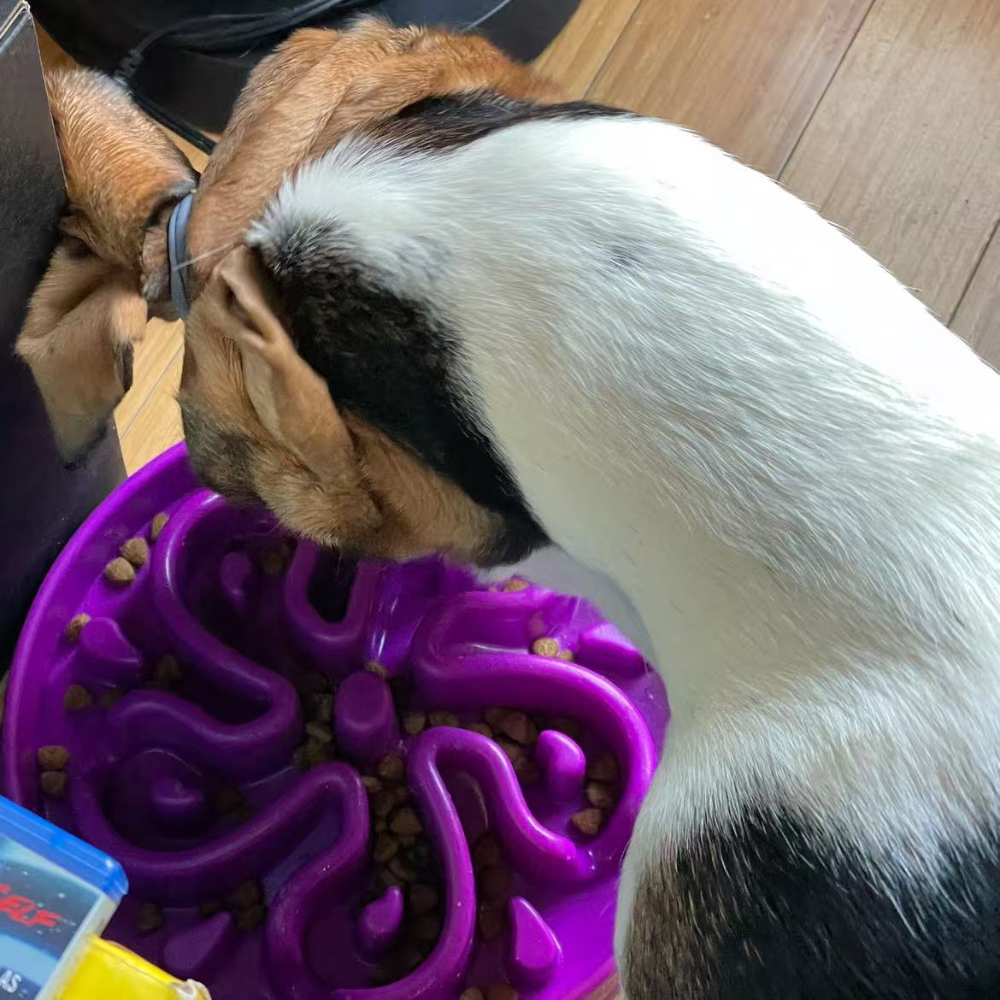

my dog
ANOTHER SAD LOVE SONG — G.Soul
Basset hounds have always been my favorite dog.
After finally figuring out the financial and timely responsibility involved, I decided I was ready to become a responsible owner.
I already had years of experience caring for basset hounds through Milky.
So I brought home a bi-color basset hound and named him Shimmer.

Sometimes, just through looking at him, pulls some memories back to the surface.